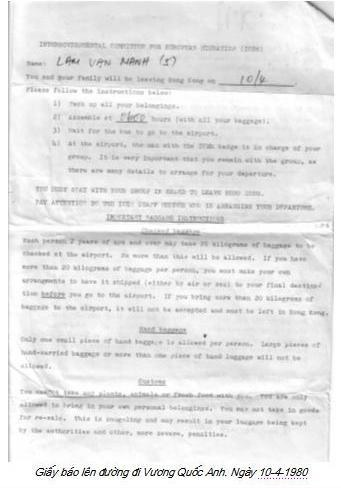
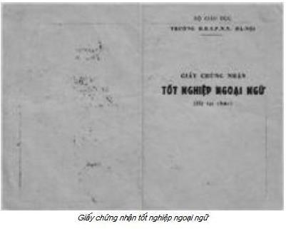
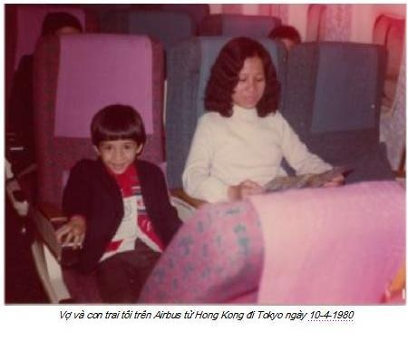
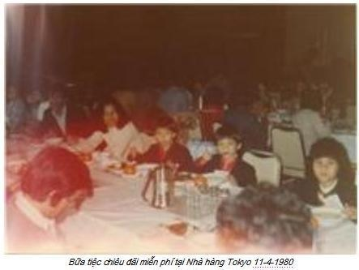

Chương 7

ả đêm 12 gia đình chúng tôi thao thức, hết đi ra lại đi vào, hết ngồi lại đứng, mong trời mau sáng. Chúng tôi được giấy báo sáng sớm 10-4 lên máy bay đi Anh Quốc tuy có ghi giờ xe đón 6.00 am, nhưng chẳng ai ngủ được vì quá sung sướng, tràn trề hy vọng. Những ngày đầu đường, xó chợ, vật vạ từ bến Tam Bạc, Hải Phòng, Bắc Hải, Kho Đen… chấm hết.
Đời tỵ nạn chúng tôi sang trang mới.
Trang mới ra sao, như thế nào vẫn còn bí ẩn, nhưng chắc chắn hơn hẳn những ngày qua.

Gần 6 giờ, cánh cổng trại A-Cai-Lau-Cai 2 từ từ mở, một đoàn xe chở tù lần lượt vào sân. Tất cả chúng tôi nhộn nhịp lấy va-ly, túi xách, thùng hàng… lủng củng đưa ra trước cửa, chờ lên xe. Viên thượng sĩ gọi tên hộ gia đình, đếm từng thành viên, lên xe.
Đến gia đình tôi, anh ta bảo đợi một chút.
Tưởng chuyện gì, hoá ra anh giao cho tôi hai cặp hồ sơ, bảo, tôi được chỉ định làm trưởng đoàn, chịu trách nhiệm giữ 2 cặp hồ sơ. Hồ sơ màu vàng giao cho người có tên Thành, đón ở phi trường Heathrow, chỉ vào hai phụ nữ đứng sát ngay bên, người phải giao trực tiếp cho anh Thành.
Hồ sơ màu xanh khi đến Wishaw, giao cho người phụ trách trại. Anh ta nói tiếng Anh, rõ ràng mạch lạc, tôi hiểu và hứa hết sức cố gắng.
Tôi bỗng nhiên được đứng đầu gần 70 nhân mạng!
Tôi hỏi viên thượng sĩ, anh ta bảo, đây là lệnh trên vì Anh ngữ của tôi khá.
Như vậy khi phỏng vấn, anh chàng người Anh thấy trả lời lưu loát tất cả các câu hỏi, tưởng tôi Anh ngữ khá lắm. Thực ra tôi học được dăm câu tủ của lớp ban đêm ở trại Khải Đức Đông, chứ trình độ tôi xí xố vài câu là hết vở.
Sau khi chiếm trọn miền Nam, trí thức miền Bắc tự thấy trình độ quá thấp so với đồng nghiệp phía Nam, nghĩ rằng kém Anh ngữ là một thiệt thòi, phong trào học Anh ngữ bắt đầu.
Năm 1977 bệnh viện tôi mở lớp Anh ngữ tại chức cho y bác sĩ. Giám đốc bệnh viện mời giảng viên Trường Đại học Ngoại ngữ Hà Nội, trong đó có cụ Đặng Chấn Liêu, cựu giảng viên Anh ngữ Đại học Oxford, theo ông Hồ về nước từ 1946, làm giáo sư danh dự.
Khóa học 1 năm, chỉ học tối thứ Bẩy và ngày Chủ Nhật. Chả biết khỉ gì, ấy thế mà cũng được cái bằng Anh ngữ hệ tại chức do ông Bùi văn Phú hiệu trưởng cấp, dọa thiên hạ.
Có bằng trong tay, chúng tôi mắc 3 bệnh: ngọng (phát âm sai), nghễng ngãng (nghe không thủng) và mắt kém (vốn từ quá ít) hầu như chẳng tác dụng gì.

Tài sản quý báu nhất của tôi đến Kho Đen là sách học Anh ngữ, Pháp ngữ, tự điển Anh-Việt, Việt-Anh, Pháp-Việt; cũng vì những bộ sách này, chiếc valy của tôi bị rạch nát, may chúng không bị vứt xuống biển phi tang. Khi ở trại Khải Đức Đông, có người bảo, đem cuốn tự điển đưa cho nhà xuất bản Hong Kong in lậu, kiếm bộn tiền, ít ra cũng vài ngàn đô.
Cuốn tự điển Anh-Việt, nhà xuất bản Khoa học Xã hội Hà Nội, ấn hành 1975, mua với giá 20 VNĐ 1977, dày 1960 trang, bìa cứng, trình bày đơn giản, trang nhã. Giấy mỏng nhưng bền, in ở Nga hay Trung Quốc, chứ Việt Nam không in nổi. Sách do tập thể giáo sư, giảng viên đại học soạn, trong đó có cụ Lê Khả Kế, Đặng Chấn Liêu và Bùi Ý hiệu đính. Chính tay cụ Đặng Chấn Liêu ký vào cuốn tôi mua khi cụ đến thăm lớp.
Tôi nghĩ lung lắm. Vài ngàn đô, số tiền tương đối lớn lúc đó, nhất là vợ con tôi đang khốn khó, nhưng tôi không muốn ăn cướp công sức của người khác. Lỗ Tấn nói, “muốn viết một trang sách, phải đọc ngàn trang”. Công sức cả đời nguời ta mà mình chỉ vì thèm tiền bán cả lương tâm, danh dự sao đành. Suy nghĩ hàng tuần lễ, anh bạn thúc ghê lắm, chắc hy vọng được hoa hồng. Truyện ngắn “Sợi tóc” của Thạch Lam vụt lại trong đầu, giúp tôi không làm chuyện xấu xa, vô liêm sỉ đó. Cái xấu, cái tốt cách nhau sợi tóc, tôi đã vượt qua được sự cám dỗ, không lấn qua ranh giới. Giờ đây, cuốn tự điển đó là kỷ vật, niềm kiêu hãnh của tôi, dành con cháu sau này.
Mấy năm sau, người từ Hong Kong sang, có cuốn tự điển y chang, có kẻ đã bán linh hồn cho quỷ. Sau này khoảng thập niên1990, nghe tin nhà văn Duyên Anh, mãn hạn tù, định cư nước ngoài, sang Mỹ đòi tiền nhuận bút do một nhà xuất bản nào đó đã tái bản tác phẩm của ông. Ông không được trả tiền mà còn bị một tay xã hội đen được chủ nhà xuất bản thuê, làm ông thân tàn ma dại. Mãnh lực của đồng tiền ghê thật!
Chúng tôi lên xe, vẫn ngồi hàng ghế sát thành xe tù. Lần này quần áo chỉnh tề, com-lê, cà-vạt, va-ly, túi xách mới cứng… y như đoàn du khách, khác xa cái ngày từ Kho Đen ra trại tự do. Tuy đồ second hand, com-lê của tôi còn khá, cà-vạt xanh theo màu áo vét, sơ mi trắng, trông chững chạc ra phết.
Nhưng trong túi 1 xu cũng không có!
Thủ tục check-in được cảnh sát giúp, mọi chuyện suông sẻ, nhanh chóng. Vị thượng sĩ đưa chúng tôi đến tận cửa máy bay –có lẽ để biết chắc không thiếu ai. Tôi là người cuối cùng. Anh bắt tay tôi, chúc may mắn. Tôi cũng chúc lại và cảm ơn anh nhiều.

Sau khi ổn định chỗ ngồi, hai nữ tiếp viên đứng hàng ghế đầu, một người nói tiếng Anh giới thiệu phải làm gì nếu chuyến bay có sự cố, người đứng kế bên làm động tác thực hành hướng dẫn cách ứng cứu. Thấy đoàn tôi nhiều người chưa hiểu, họ yêu cầu tôi đứng lên thông dịch. Cũng may, đơn giản tôi giúp được.
Cài xong dây bảo biểm, máy bay từ từ lăn bánh, tăng tốc, thoáng rung một chút, nhìn qua cửa sổ, máy bay đã rời mặt đất, vọt lên cao rất nhanh. Tôi nhìn đàn con, lòng tràn đầy sung sướng, ứa lệ. Tôi không tưởng tượng nổi có giờ phút như thế này đến với gia đình tôi.
Sau 2 giờ bay, chiếc Airbus hạ cánh xuống phi trường Tokyo, chúng tôi theo hành khách vào sảnh đường. Người đông như kiến, sảnh đường quá rộng, sang trọng, choáng ngợp. Chúng tôi như lạc vào một thế giới mới, chưa một lần nhìn thấy, đứng túm tụm thành một đám, ngơ ngác. Hai người Nhật com-lê, cà-vạt sang trọng đến, cúi đầu chào. Chúng tôi đáp lễ. Họ hỏi ai là trưởng đoàn. Tôi đến, họ bắt tay, hỏi chúng tôi là ai, ở đâu đến. Tôi trình bày sự thật. Họ mời tôi vào văn phòng, xin mượn hồ sơ, ngỏ ý photocopy. Tôi nghĩ, chẳng có gì bí mật. Tôi đưa, họ phô-tô ngay tại chỗ. Họ bảo, đến 3 giờ chiều mới có chuyển máy bay 747 đi London, hành lý phi trường lo liệu chuyển, bây giờ về hotel nghỉ và dùng bữa. Tôi nói thật, chúng tôi không có tiền. Họ mỉm cười, nói các khoản miễn phí.
Hai chiếc coach –xe bus- sang trọng đợi chúng tôi ngoài thềm. Khoảng nửa giờ sau, chúng tôi đến khách sạn sang trọng. Bốn dẫy bàn ăn dài trải khăn trắng muốt, mỗi bàn có bốn cô phục vụ, áo váy đồng phục, tươi cười chào chúng tôi.

Từng món ăn được bưng ra. Đầu tiên món khai vị, tiếp theo món hải sản, gà quay, rau… các món đều bốc hơi nghi ngút, thơm nức mũi. Chưa bao giờ gia đình tôi được ăn những món ăn cao cấp như thế này. Món này hết, món khác bưng ra. Sau cùng là món tráng miệng và hoa quả.
Họ đưa mỗi gia đình về một phòng riêng. Phòng gia đình tôi 5 giường một, ga trải giường, gối trắng tinh, thơm mùi nước hoa đắt tiền. Cả đời chưa bao giờ bước chân vào hotel, giờ đây được vào khách sạn 5 sao tại Tokyo. Nhường vợ con tắm xong, đến lượt tôi. Tôi xả nước ấm đầy bồn, nằm duỗi dài, sung sướng.
Gần hai giờ chiều, xe coach đợi ngoài, đưa chúng tôi về phi trường.
Một chuyện buồn, cháu trai gần 2 tuổi, con một gia đình ở Móng Cái, không biết bữa ăn có món gì không hợp, cháu iả chảy. Người cha không để ý, dắt bé đi dọc hàng lang hotel. Thấy có mùi hôi, tôi quay tìm, phát hiện một đoạn thảm xanh dài hơn 20 mét có dấu chân cháu dính phân. Tôi đỏ mặt. Biết nói làm sao đây. Tôi nói nhỏ với cha cháu, bế cháu đưa vào nhà vệ sinh, đừng làm thảm bẩn thêm. Anh không làm, chắc sợ bẩn bộ com-lê, anh dắt con đi nhanh về hướng toilet. Lại thêm một đoạn thảm nữa dính phân. Tôi đi thẳng ra xe. Chịu, biết nói gì. Chắc hotel phải tốn hàng ngàn Yên giặt thảm, đóng cửa vài ngày tổng vệ sinh!
Đường bay từ Tokyo đến London qua Alaska, không như ngày nay, qua Trung cộng, Nga, Đông Âu vì chiến tranh lạnh đang nóng dần. Tổng Bí thư Đảng Cộng sản Nga Xô thời ấy, Brezhnev, lông mày như 2 con sâu róm, hiếu chiến lắm.
Năm 1982, máy bay 747 của Nam Hàn lạc đường, tên lửa Xô-viết thiêu sống gần 500 hành khách và phi đoàn trên không phận Nga.
Cả thế giới lên án, y phớt lờ.